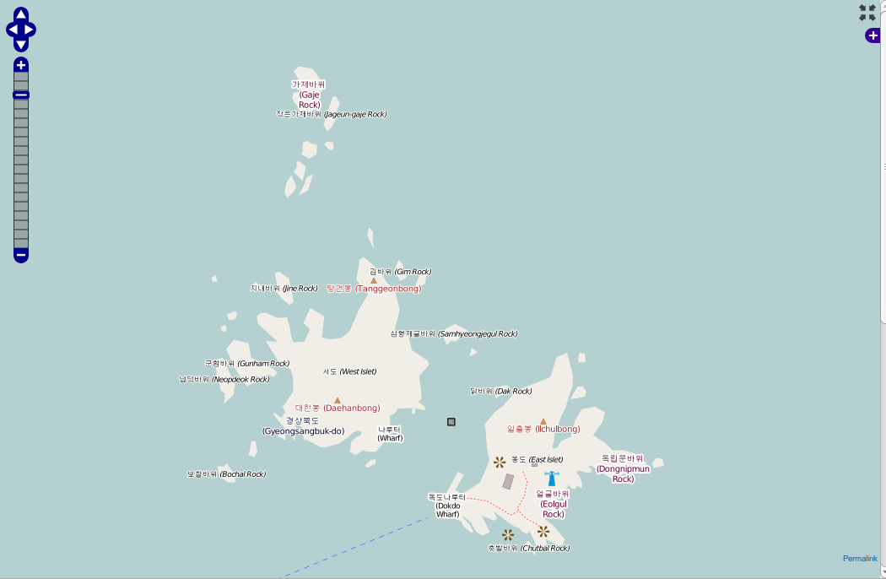

TileMan
TileMan+Tirex: new alternative for Tile Service
FOSS4G 2013/Tokyo
Hiroshi Miura(@miurahr)
OpenStreetMap Foundation Japan
github.com/osmfj/tileman
Agenda
Motivation
Motivation: At first
Realize simple tile CDN for Japan
Utilize cloud server sponsord by GMO Internet
Motivation: chaged mind soon
Starting local tile service
Feature to help adoption in public sector
Map design to familiar local users
Flexible
What's TileMan
Distributed tile server frontend
http://osmfj.github.io/tileman
TileMan: tile manager
Non-fledged Tile Serving Manager
It makes Tirex to different
- Distributed Tile Serving
- render-ahead feature
- non-blocking, high performance request handling
Just started in March, 2013. and now v1.3 and soon v1.4.
TileMan: powerful
Powerful load control and direction
by requested tiles geometory.
by client address, city, country
by requested browser version
TileMan: by client country
Border dispute Island between Korea and Japan.

From IP Address Korean, From IP Address Japan
TileMan: use case
OSMF Japan serves Japan tiles: tile.openstreetmap.jp
Act as cache server for other tiles than Japan
Dynamic boarder display control
Serving live tiles around Japan
render-ahead feature enabled
Easy install
Uubntu PPA at launchpad.net/~osmjapan
Vagrant support (one line command build server)
Architecture
Overview
TileMan: configuration
Typical Servers configuration
TileMan: configuration (cont.)
Extensive servers configuration
TileMan: Internal

OpenResty: App Server Extension for Nginx
Web Application Server
high-performance & 10K+ connections
Lua programming language
backends: MySQL, PostgreSQL, Memcached, and Redis
Nginx
nginx.org: high performance http server
World 2nd http server (12.3% of active site)
Asynchronous architecture, event driven
Low memory foot print, CPU usage
Lua
- "Lua" (pronounced LOO-ah) means "Moon" in Portuguese

Lua
lua.org
Scripting language born in Brazil in 1992
Simple procedural syntax/tileman_software_stack.png
powerful data description
Dynamic variable type
Register-based virtual machine
Automatic memory management
Tirex: at glance
Tirex: pronounce "Ti-rex"
the tile server suite
designed for OpenStreetMap
powered by Perl
multiple backend: mapnik, mapserver, et. al.
parallel rendering
TileMan: utilities
Help create/import/update postgis DB from planet data
Expire old tile using powerful Tirex-batch
Vagrant script for automate configution .
Future Challenge
mod_tile/renderd protocol support
Lightweight Vector tile service
- GeoJSON
- PostgreSQL/PostGIS integration
Automation support
Thanks and welcome
Ideas, suggestion and participation are welcome!
tile-serving ML or
github.com/osmfj/tilemanYou can reach this presentation at
https://miurahr.github.io/Tile Server supported by GMO Internet group.
- TileMan Photo: flickr.com/photos/brieanddylan/4602743878